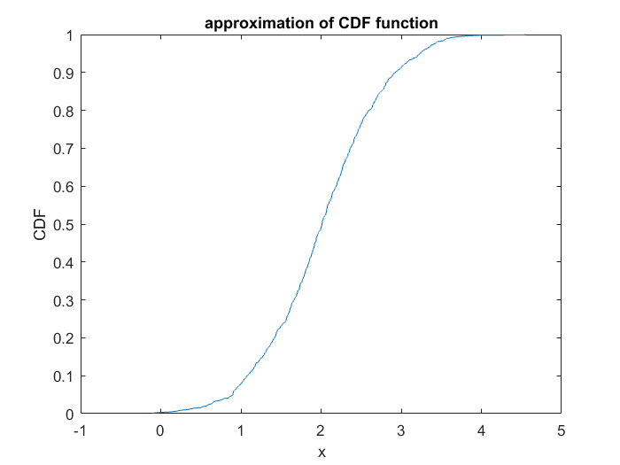
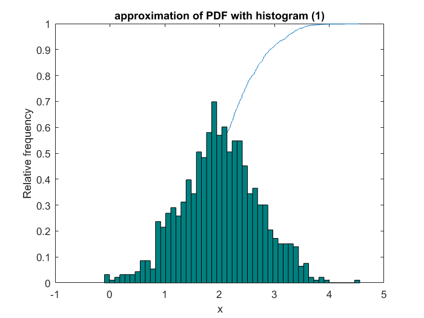
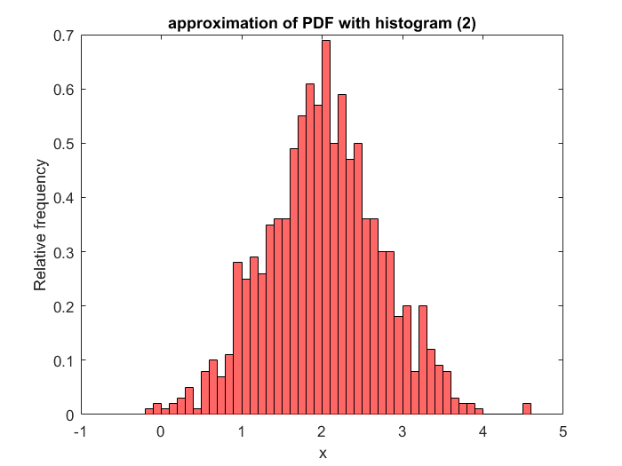
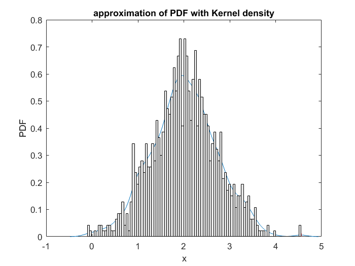

Contents
Tutorial I. 1/3
This SCRIPT shows how one can approximate the PDF and the CDF functions with the help of SAMPLES with and without using the libary package SGLIB
clear variables
clf
Sampling with MATLAB's in built RNDN function
% Number of samples N=1000; % Sample from N(0,1) x = randn(1,N); % Change mean to 2 and variance to 0.5; x=x*sqrt(0.5)+2;
Approximation of CDF
Let's approximate the CDF with the help of sorted samples
% Sort samples x_p = sort(x); % Approximate cdf plot (x_p, (1:N)/N) title('approximation of CDF function') xlabel('x') ylabel('CDF')
Approximation of PDF - HISTOGRAM from scratch
% Limits of sample domain x_lims=[min(x), max(x)]; % Number of bins n_b = 50; % Width of bins w_bin = (x_lims(2)-x_lims(1))/n_b; % Define bins bins = min(x)+(0:n_b)*w_bin; % Initiate memory for probabilities f= zeros(size(bins)); for i=1:n_b % Left value of bin left_val=bins(i); % Right value of bin right_val=bins(i+1); % Check which samples are within the bin ind=find(left_val <= x & x< right_val); % Frequency (number of samples within the bin) f(i) = length(ind); end % Normalize f_X=f/sum(f*w_bin); % plot histogram for i=1:n_b rectangle('position', [bins(i),0,w_bin, f_X(i)], 'FaceColor',[0 .5 .5]) end title('approximation of PDF with histogram (1)') xlabel('x') ylabel('Relative frequency')
Approximation of PDF with the in-built HISTOGRAM function
Please note, MATLAB has two functions for plotting the histogram: HIST and HISTOGRAM. HISTOGRAM is only available in later version, but it is object oriented, and one can easily modify the properties (such as bin width, bin number, etc. as a postprocessing.
% Plot histogram hist=histogram(x); % Change histogram's color and binwidth, and normalize hist.FaceColor='red'; hist.BinWidth=hist.BinWidth/2; hist.Normalization='pdf'; title('approximation of PDF with histogram (2)') xlabel('x') ylabel('Relative frequency')
Approximation of PDF from samples with SGLIB with Kernel Density Estimation
With the help of the PLOT_DENSITY function within SGLIB the PDF of the samples can be easily plotted. The 'TYPE' optional input defines which PDF approximation should be used. TYPE='HIST' plots a histogram while TYPE = 'KDE' plots the Kernel Density Estimate. The sample points can be plotted on the axis with the optional input RUG, by setting it to TRUE.
% Plot approximation of PDF with Kernel density functions plot_density(x, 'type', 'kde', 'rug', true); title('approximation of PDF with Kernel density') xlabel('x') ylabel('PDF') hold on % Plot approximation of PDF with histogram: plot_density(x, 'type', 'hist', 'rug', false)